Diskontering er en fundamental finansiell teknikk som brukes til å beregne nåverdien av fremtidige kontantstrømmer. I regnskaps- og finanssammenheng er diskontering essensielt for å sammenligne verdien av penger på ulike tidspunkter, siden en krone i dag er verdt mer enn en krone i fremtiden på grunn av inflasjon og alternativkostnad.
For relaterte finansielle begreper, se Hva er Disagio?.
Hva er Diskontering?
Diskontering er prosessen med å redusere fremtidige kontantstrømmer til deres nåverdi ved å anvende en diskonteringsrente. Dette konseptet bygger på det grunnleggende prinsippet om at penger har en tidsverdi - time value of money.
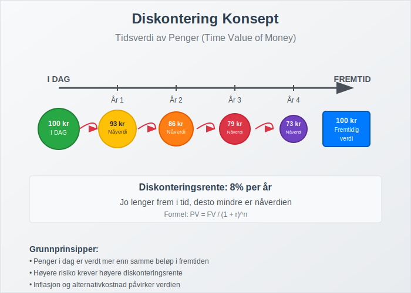
Grunnleggende Prinsipper:
- Tidsverdi av penger: Penger i dag er verdt mer enn samme beløp i fremtiden
- Alternativkostnad: Avkastning man kunne fått ved alternative investeringer
- Risiko: Høyere risiko krever høyere diskonteringsrente
- Inflasjon: Reduserer kjøpekraften over tid
Diskontering vs. Kapitalisering
Det er viktig å forstå forskjellen mellom diskontering og kapitalisering (compound interest).
For en dypere forståelse av kapitalisering (renters rente), se Renters rente.
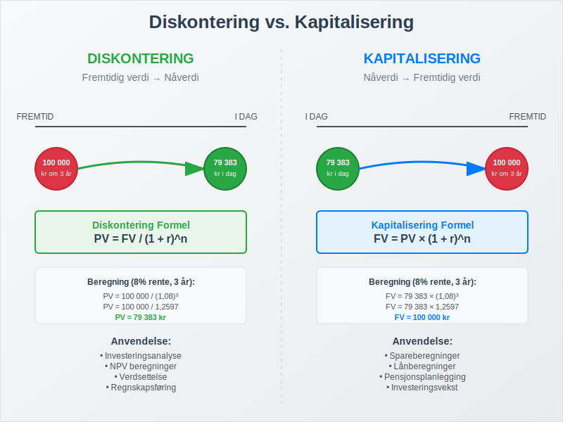
| Aspekt | Diskontering | Kapitalisering |
|---|---|---|
| Retning | Fremtidig verdi → Nåverdi | Nåverdi → Fremtidig verdi |
| Formel | PV = FV / (1 + r)^n | FV = PV × (1 + r)^n |
| Anvendelse | Investeringsanalyse, avkastning | Sparing, lånberegninger |
| Perspektiv | “Hva er det verdt i dag?” | “Hva blir det verdt senere?” |
Diskonteringsrente
Diskonteringsrenten er den renten som brukes til å diskontere fremtidige kontantstrømmer. Valg av riktig diskonteringsrente er kritisk for nøyaktige beregninger.
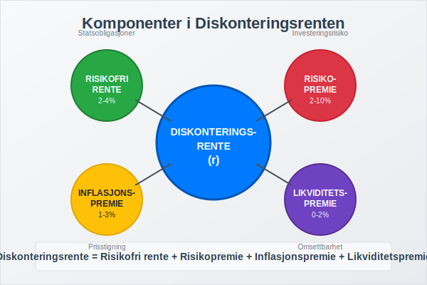
Komponenter i Diskonteringsrenten:
- Risikofri rente: Typisk statsobligasjonsrente
- Risikopremie: Kompensasjon for investeringsrisiko
- Inflasjonspremie: Kompensasjon for forventet inflasjon
- Likviditetspremie: Kompensasjon for manglende likviditet
Diskonteringsrenter hentes ofte fra markedsbaserte yield på sammenlignbare investeringer, som obligasjonsyields eller forventet aksjeavkastning.
Vanlige Diskonteringsrenter:
| Type Investering | Typisk Diskonteringsrente |
|---|---|
| Statsobligasjoner | 2-4% |
| Bedriftsobligasjoner | 4-8% |
| Eiendomsinvesteringer | 6-10% |
| Aksjer/Egenkapital | 8-15% |
| Høyrisiko prosjekter | 15%+ |
Nåverdi (Present Value) Beregninger
Nåverdi er dagens verdi av fremtidige kontantstrømmer diskontert med en passende rente.
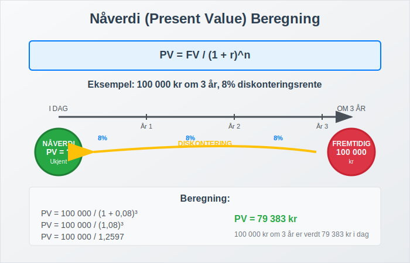
Grunnleggende Nåverdi Formel:
PV = FV / (1 + r)^n
Hvor:
- PV = Nåverdi (Present Value)
- FV = Fremtidig verdi (Future Value)
- r = Diskonteringsrente
- n = Antall perioder
Eksempel på Enkelt Nåverdi:
Situasjon: Du skal motta 100 000 kr om 3 år. Diskonteringsrenten er 8%.
Beregning:
PV = 100 000 / (1 + 0,08)^3
PV = 100 000 / 1,2597
PV = 79 383 kr
Netto Nåverdi (NPV)
Netto nåverdi (Net Present Value) er summen av alle diskonterte kontantstrømmer minus den opprinnelige investeringen.
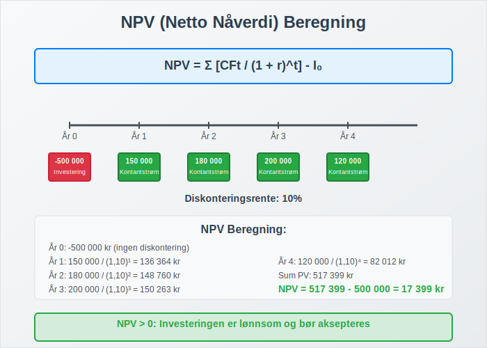
NPV Formel:
NPV = Σ [CFt / (1 + r)^t] - I0
Hvor:
- CFt = Kontantstrøm i periode t
- r = Diskonteringsrente
- t = Tidsperiode
- I0 = Opprinnelig investering
NPV Beslutningsregler:
- NPV > 0: Investeringen er lønnsom
- NPV = 0: Investeringen gir akkurat ønsket avkastning
- NPV < 0: Investeringen er ulønnsom
Praktiske Eksempler på Diskontering
La oss se på hvordan diskontering brukes i praksis gjennom konkrete eksempler.
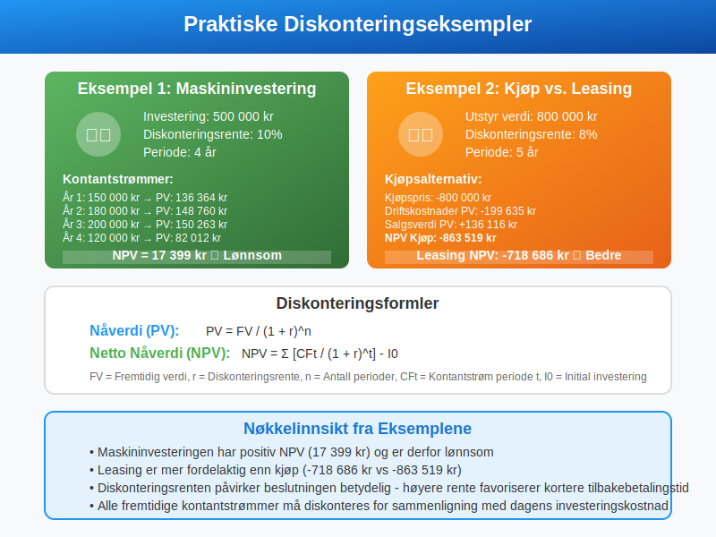
Eksempel 1: Maskininvestering
Situasjon: Et selskap vurderer å kjøpe en maskin for 500 000 kr som vil generere følgende kontantstrømmer:
| År | Kontantstrøm |
|---|---|
| 1 | 150 000 kr |
| 2 | 180 000 kr |
| 3 | 200 000 kr |
| 4 | 120 000 kr |
Diskonteringsrente: 10%
NPV Beregning:
År 1: 150 000 / (1,10)^1 = 136 364 kr
År 2: 180 000 / (1,10)^2 = 148 760 kr
År 3: 200 000 / (1,10)^3 = 150 263 kr
År 4: 120 000 / (1,10)^4 = 82 012 kr
Total PV = 517 399 kr
NPV = 517 399 - 500 000 = 17 399 kr
Konklusjon: Investeringen er lønnsom (NPV > 0).
Eksempel 2: Leasingavtale
Situasjon: Sammenligning av kjøp vs. leasing av utstyr.
Kjøpsalternativ:
- Kjøpspris: 800 000 kr
- Årlige driftskostnader: 50 000 kr
- Salgsverdi etter 5 år: 200 000 kr
Leasingalternativ:
- Årlig leasingkostnad: 180 000 kr (inkludert service)
Diskonteringsrente: 8%
Kjøp NPV:
Kjøpspris: -800 000 kr
Driftskostnader PV: -50 000 × 3,9927 = -199 635 kr
Salgsverdi PV: 200 000 / (1,08)^5 = 136 116 kr
NPV Kjøp = -863 519 kr
Leasing NPV:
Leasingkostnader PV: -180 000 × 3,9927 = -718 686 kr
NPV Leasing = -718 686 kr
Konklusjon: Leasing er mer fordelaktig (-718 686 kr vs. -863 519 kr).
Diskontering i Regnskapsføring
Diskontering spiller en viktig rolle i flere regnskapsområder og standarder.
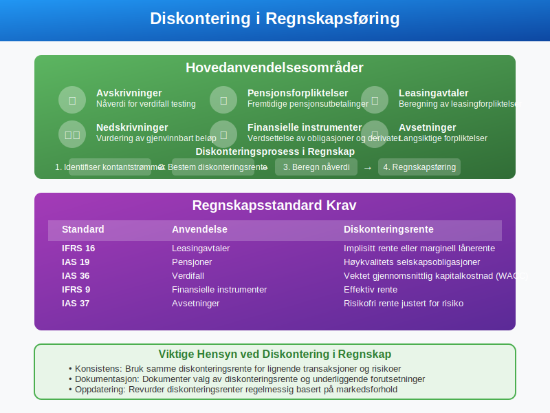
Anvendelsesområder:
- Avskrivninger: Beregning av nåverdi for verdifall testing
- Pensjonsforpliktelser: Diskontering av fremtidige pensjonsutbetalinger
- Leasingavtaler: Beregning av leasingforpliktelser
- Nedskrivninger: Vurdering av gjenvinnbart beløp
- Finansielle instrumenter: Verdsettelse av obligasjoner og derivater
Regnskapsstandard Krav:
| Standard | Anvendelse | Diskonteringsrente |
|---|---|---|
| IFRS 16 | Leasingavtaler | Implisitt rente eller marginell lånerente |
| IAS 19 | Pensjoner | Høykvalitets selskapsobligasjoner |
| IAS 36 | Verdifall | Vektet gjennomsnittlig kapitalkostnad (WACC) |
| IFRS 9 | Finansielle instrumenter | Effektiv rente |
Diskonteringsmetoder
Det finnes flere metoder for å utføre diskonteringsberegninger avhengig av kontantstrømmenes natur.
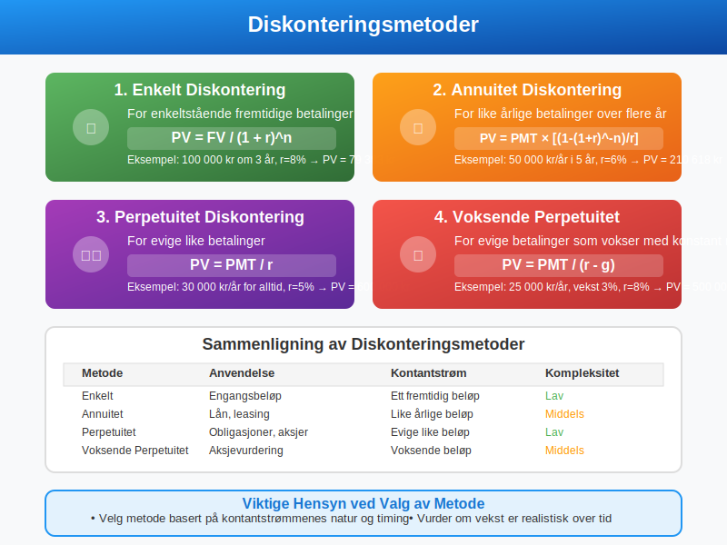
1. Enkelt Diskontering
For enkeltstående fremtidige betalinger: PV = FV / (1 + r)^n
2. Annuitet Diskontering
For like årlige betalinger over flere år: PV = PMT × [(1 - (1 + r)^-n) / r]
3. Perpetuitet Diskontering
For evige like betalinger: PV = PMT / r
4. Voksende Perpetuitet
For evige betalinger som vokser med konstant rate: PV = PMT / (r - g)
Diskontering og Investeringsanalyse
Diskontering er grunnlaget for flere viktige investeringsanalyseverktøy.
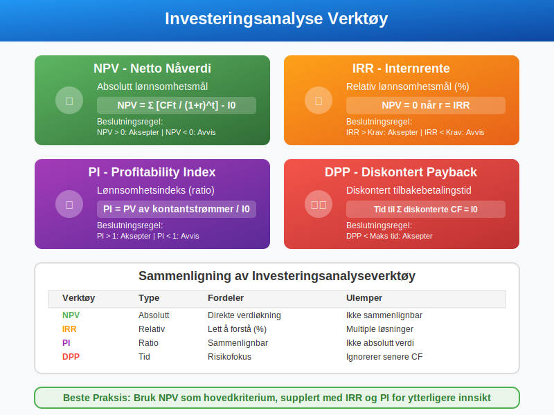
Viktige Nøkkeltall:
- NPV (Netto Nåverdi): Absolutt lønnsomhetsmål
- IRR (Internrente): Relativ lønnsomhetsmål
- PI (Profitability Index): Lønnsomhetsindeks
- DPP (Discounted Payback Period): Diskontert tilbakebetalingstid
IRR (Internal Rate of Return)
IRR er den diskonteringsrenten som gjør NPV = 0.
Beslutningsregel:
- IRR > Krav til avkastning: Aksepter prosjektet
- IRR < Krav til avkastning: Avvis prosjektet
Faktorer som Påvirker Diskonteringsrenten
Flere faktorer må vurderes når man setter diskonteringsrenten.
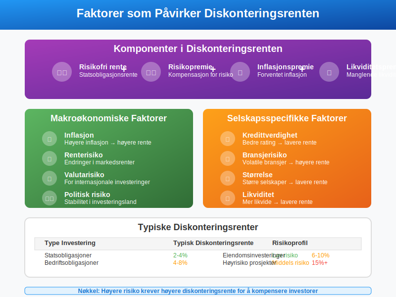
Makroøkonomiske Faktorer:
- Inflasjon: Høyere inflasjon → høyere diskonteringsrente
- Renterisiko: Endringer i markedsrenter
- Valutarisiko: For internasjonale investeringer
- Politisk risiko: Stabilitet i investeringsland
Selskapsspecifikke Faktorer:
- Kredittverdighet: Bedre rating → lavere rente
- Bransjerisiko: Volatile bransjer → høyere rente
- Størrelse: Større selskaper → lavere rente
- Likviditet: Mer likvide investeringer → lavere rente
Vanlige Feil ved Diskontering
Det er flere vanlige feil som gjøres ved diskonteringsberegninger.
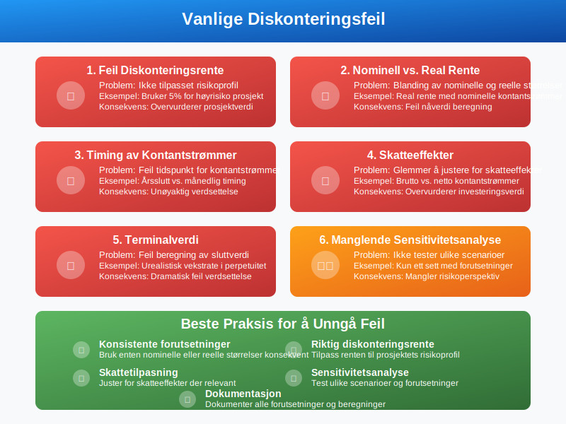
Typiske Feil:
- Feil diskonteringsrente: Ikke tilpasset risikoprofil
- Nominell vs. real rente: Blanding av nominelle og reelle størrelser
- Timing av kontantstrømmer: Feil tidspunkt for kontantstrømmer
- Skatt: Glemmer å justere for skatteeffekter
- Terminalverdi: Feil beregning av sluttverdi
Beste Praksis:
- Bruk konsistente forutsetninger (nominell/real)
- Juster for skatt der relevant
- Utfør sensitivitetsanalyse
- Dokumenter alle forutsetninger
- Bruk konservative estimater ved usikkerhet
Diskontering i Ulike Bransjer
Anvendelsen av diskontering varierer mellom bransjer.
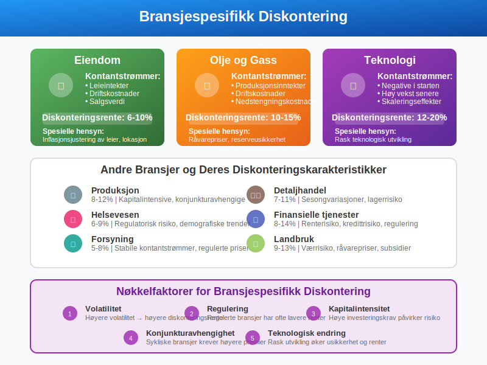
Eiendom
- Kontantstrømmer: Leieintekter, driftskostnader, salgsverdi
- Diskonteringsrente: 6-10% avhengig av lokasjon og type
- Spesielle hensyn: Inflasjonsjustering av leier
Olje og Gass
- Kontantstrømmer: Produksjonsinntekter minus driftskostnader
- Diskonteringsrente: 10-15% på grunn av høy risiko
- Spesielle hensyn: Råvarepriser, reserveusikkerhet
Teknologi
- Kontantstrømmer: Ofte negative i starten, høy vekst senere
- Diskonteringsrente: 12-20% på grunn av høy risiko
- Spesielle hensyn: Rask teknologisk utvikling
Diskontering og Budsjettering
Diskontering er viktig i langsiktig budsjettering og strategisk planlegging.
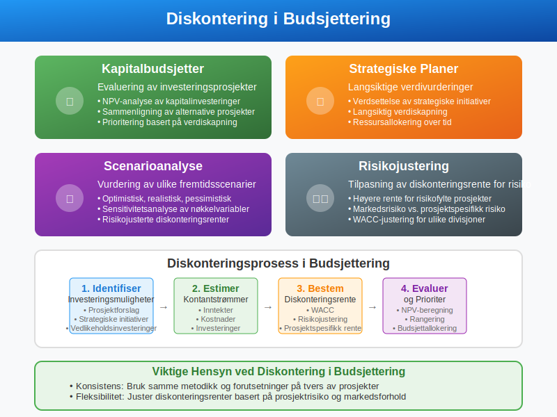
Anvendelse i Budsjetter:
- Kapitalbudsjetter: Evaluering av investeringsprosjekter
- Strategiske planer: Langsiktige verdivurderinger
- Scenarioanalyse: Vurdering av ulike fremtidsscenarier
- Risikojustering: Tilpasning av diskonteringsrente for risiko
Digitale Verktøy for Diskontering
Moderne regnskaps- og finansprogrammer har innebygde diskonteringsfunksjoner.
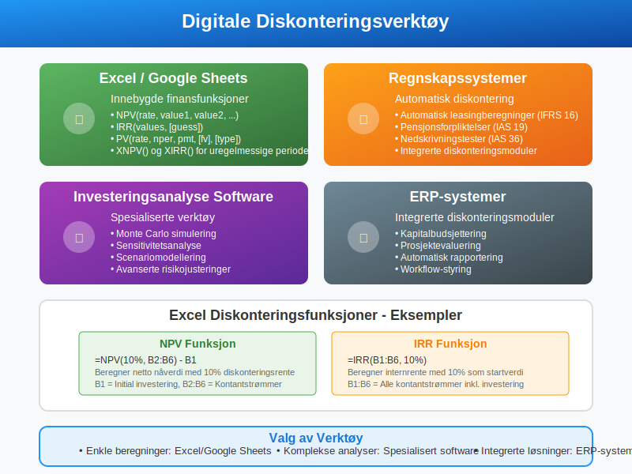
Populære Verktøy:
- Excel/Google Sheets: NPV(), IRR(), PV() funksjoner
- Regnskapssystemer: Automatisk diskontering av leasingavtaler
- Investeringsanalyse software: Spesialiserte verktøy
- ERP-systemer: Integrerte diskonteringsmoduler
Excel Funksjoner:
=NPV(rate, value1, value2, ...)
=IRR(values, [guess])
=PV(rate, nper, pmt, [fv], [type])
Regulatoriske Krav til Diskontering
Ulike regnskapsregler krever spesifikke tilnærminger til diskontering.
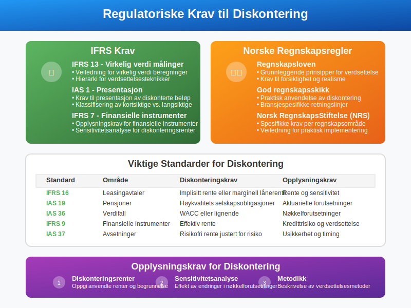
IFRS Krav:
- IFRS 13: Veiledning for virkelig verdi målinger
- IAS 1: Krav til presentasjon av diskonterte beløp
- IFRS 7: Opplysningskrav for finansielle instrumenter
Norske Regnskapsregler:
- Regnskapsloven: Grunnleggende prinsipper
- God regnskapsskikk: Praktisk anvendelse
- Regnskapsstandard: Spesifikke krav per område
Fremtidige Trender innen Diskontering
Diskonteringsmetoder utvikler seg med nye teknologier og regnskapsregler.
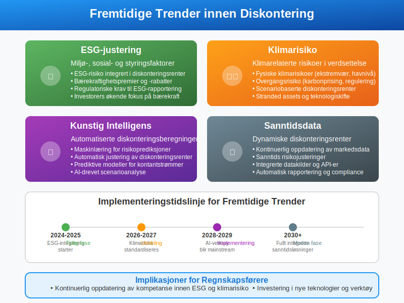
Nye Utviklinger:
- ESG-justering: Miljø-, sosial- og styringsfaktorer i diskonteringsrente
- Klimarisiko: Justering for klimarelaterte risikoer
- Kunstig intelligens: Automatiserte diskonteringsberegninger
- Sanntidsdata: Dynamiske diskonteringsrenter
Konklusjon
Diskontering er et fundamentalt konsept i regnskap og finans som gjør det mulig å sammenligne verdier på tvers av tid. Forståelse av nåverdi, diskonteringsrenter og NPV-beregninger er essensielt for:
- Investeringsbeslutninger
- Regnskapsføring av langsiktige forpliktelser
- Strategisk planlegging og budsjettering
- Verdsettelse av eiendeler og selskaper
Ved å mestre diskonteringsteknikker kan bedrifter ta bedre finansielle beslutninger og overholde regnskapsstandarder. Det er viktig å velge riktig diskonteringsrente, forstå risikofaktorer, og anvende konsistente metoder for å oppnå pålitelige resultater.
Husk at diskontering er både en kunst og en vitenskap - tekniske ferdigheter må kombineres med god forretningsforståelse og sunt skjønn for å oppnå de beste resultatene.